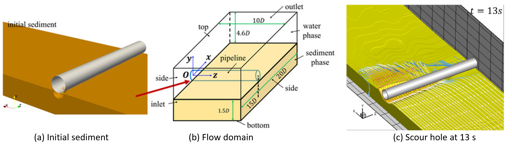

Three-dimensional numerical simulation of spanwise scour propagation beneath a submarine pipeline

Abstract
When submarine pipelines are placed on erodible sandy beds, the interaction between the surrounding flow, the pipeline, and the sediment can induce local scour. While two-dimensional simulations have been extensively performed to capture the scour process in a two-dimensional cross-sectional plane, they cannot simulate the three-dimensional (3D) spanwise propagation of the scour hole, which leads to free-span development. This study presents 3D numerical simulations of current-induced scour propagation in the spanwise direction beneath a subsea pipeline using an open-source Eulerian two-phase flow solver. Systematic simulations are performed under four distinct Shields parameters. The results indicate a close spatial association between the evolving 3D scour hole and regions of localized shear stress amplification and sediment flux near the span shoulder. For low Shields parameters, the scour hole retains pronounced 3D features with steady spanwise propagation, which is also characterized by skewed wake flow structures and oblique downstream dunes. At higher Shields parameters, the scour front propagates rapidly across the domain, causing the morphology and flow streamlines to transition to a quasi-2D state. Furthermore, the scour slope at the span shoulder remains approximately constant across the investigated flow conditions. The spanwise propagation speed is approximately constant during the fitted propagation stage for the selected four simulated conditions.
Read the published article ↗